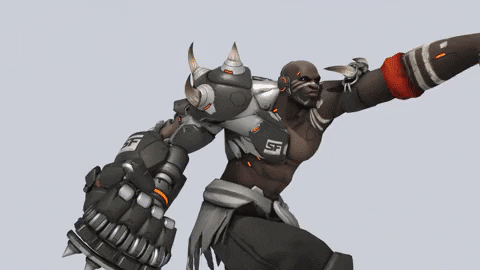
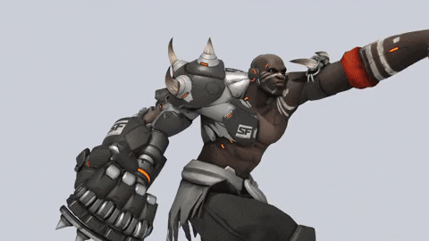
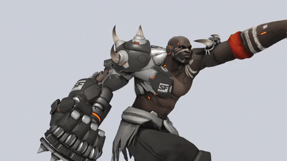
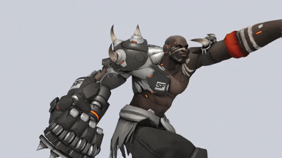
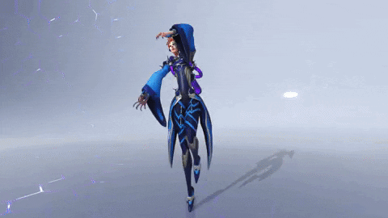
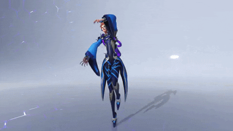
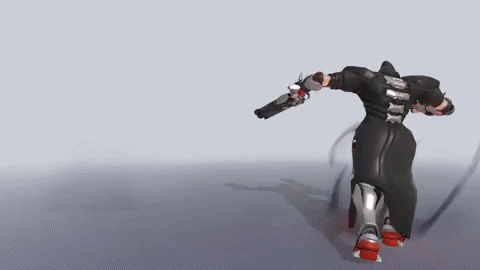
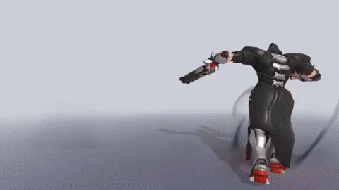

Doomfist es el líder calculador de Talon, una organización terrorista y una fuerza paramilitar que trabaja en directa oposición a Overwatch.
ORIGENES
Akande Ogundimu es un peleador altamente calificado y un líder natural que perdió su brazo derecho durante la Crisis ómnica y luego se unió a Talon. Ahí ascendió de rango y asesinó a su jefe, quien era el Doomfist anterior, para después tomar su arma y título homónimo. En la actualidad está decidido a sumergir al mundo en un nuevo conflicto tras sus misteriosos propósitos personales.
Crisis Ómnica
Akande Ogundimu era el hijo de una familia adinerada de Nigeria dueña de una compañía de tecnología prostética. La estelar carrera en la lucha profesional de Ogundimu, quien estaba bien entrenado y era competente en una amplia variedad de estilos de lucha de gran intensidad, se vio truncada con la pérdida de su brazo derecho durante la Crisis ómnica. Y si bien la tecnología de su familia podía reemplazar su brazo, Ogundimu se sintió totalmente perdido sin el desafío y el crisol de la competencia. En ese tiempo, buscaba algo a lo que dedicarse de lleno. Fue solo cuando el actual Doomfist, Akinjide Adeyemi, le pidió que se uniera a sus filas que Ogundimu encontró su camino a seguir.
 

La científica Moira O'Deorain, que es tan brillante como controversial, está en la vanguardia de la ingeniería genética y busca una forma de reescribir los elementos básicos fundamentales de la vida.
ORIGENES
A la controversial genetista Moira O'Deorain solo le importaba el avance evolutivo de la humanidad. Aunque su trabajo le ha hecho ganar bastantes enemigos, sus alianzas con el colectivo científico de Oasis y con la implacable organización Talon la liberaron de limitaciones morales y monetarias, hecho que le permitió continuar con sus descubrimientos con gran eficacia... y crueldad.
Talon
Después de Overwatch, O'Deorain se vio obligada a recurrir a fuentes poco convencionales de financiamiento. Continuó su trabajo como parte de la oscura organización Talon. Tras la destrucción del cuartel general de Overwatch en Suiza, O'Deorain le inyectó a Reyes, que estaba casi muerto, una potente forma de la sustancia que le había dado por primera vez en Blackwatch, diciendo que era un procedimiento necesario para salvar su vida. Los resultados potenciaron aún más los talentos únicos de Reyes, aunque desestabilizaron considerablemente su capacidad de controlarlos. Talon siguió colaborando en sus experimentos a cambio de utilizar los resultados para sus propios fines. Pero O'Deorain trabajaba con Talon en secreto, manteniendo las apariencias ante la comunidad científica. La invitaron a unirse al colectivo científico que había fundado la ciudad de Oasis, y se convirtió en su Ministra de Genética. Aunque su trabajo sigue siendo desconocido para la mayoría del mundo, O'Deorain hará lo que sea para lograr avances científicos.
Sombra, una de las mejores hackers del mundo, utiliza la información para manipular a los que ostentan el poder.
ORIGENES
Sombra, una de las mejores hackers del mundo, utiliza la información para manipular a los que ostentan el poder. Para continuar con su propósito de descubrir la verdad detrás de una oscura conspiración global, Sombra se unió a las filas de Talon, donde aprovecha sus recursos para sus propios fines
Infancia
Mucho antes de adoptar el nombre de "Sombra", Olivia Colomar era una de tantos miles de niños a los que la Crisis ómnica dejó huérfanos. Gran parte de la infraestructura de su país terminó destruida, por lo que tuvo que aprender a sobrevivir utilizando su talento natural para el hackeo y las computadoras. Después de que Olivia fuera acogida por la banda mexicana de Los Muertos, contribuyó a su singular revolución contra el gobierno. Los Muertos creían que la reconstrucción de México había beneficiado principalmente a los ricos y poderosos, olvidándose de los auténticos necesitados. Tras múltiples hazañas, Olivia ganó mucha confianza en sus facultades, pero acabó cayendo desprevenida en la telaraña de una conspiración global... una conspiración que se había fijado en ella. Al ver amenazada su seguridad, Olivia no tuvo más remedio que eliminar todo rastro de su identidad y buscar un lugar donde esconderse.
La vida del brillante astrofísico Dr. Siebren de Kuiper cambió para siempre cuando un experimento que salió mal le otorgó la habilidad de controlar la gravedad; ahora, Talon lo manipula para sus propios fines.
ORIGENES
La vida del aclamado astrofísico Siebren de Kuiper cambió para siempre cuando un experimento fallido le otorgó la habilidad de controlar la gravedad, pero le fragmentó la mente. Ahora lucha por mantener su conexión con la realidad, sin saber que Talon lo manipula para sus propios fines.
Cientifico
De Kuiper fue considerado un pionero en su campo. El trabajo de su vida incluía encontrar el modo de controlar el poder de la gravedad. Conocido también por su investigación de vanguardia y excéntrica personalidad, realizó la mayoría de sus estudios desde su laboratorio en La Haya. Creyendo que estaba más cerca que nunca de alcanzar su objetivo, realizó su experimento más importante en una estación espacial internacional. Pero algo salió mal, lo que desencadenó la breve formación de un agujero negro. De Kuiper solo estuvo expuesto a su poder durante un momento, pero sufrió un grave daño psicológico. El área a su alrededor comenzó a experimentar extrañas fluctuaciones, la fuerza de gravedad aumentaba y disminuía con sus reacciones. Fue necesario evacuarlo de inmediato.
 

Hubo un tiempo en el que Gabriel Reyes era un estimado miembro de Overwatch; primero fungió como comandante del grupo y después como líder de Blackwatch, la división de operaciones encubiertas de Overwatch. Se creía que había fallecido tras la explosión del cuartel general de Overwatch. Sin embargo, los rumores indican que logró escapar de su destino y que ahora trabaja como un irascible asesino conocido como Reaper, uno de los elementos más letales de Talon.
Talon
La verdad, conocida por pocos, es que Reaper es el antiguo comandante de Blackwatch Gabriel Reyes, al que se creía muerto desde la destrucción del cuartel general de Overwatch en Suiza. Después de que Overwatch capturara a Doomfist, Reyes se pasó al bando de Talon, frustrado por la burocracia y las formalidades que le impedían constantemente alcanzar la verdadera justicia en Overwatch. En Egipto, Reyes se encontró cara a cara con otros dos fantasmas inquietos de su pasado: el antiguo comandante de Overwatch, Jack Morrison, y la capitana Ana Amari. Aunque los tres compañeros no tenían mucho que decirse, es probable que sus caminos se vuelvan a cruzar. Al fin y al cabo, sus nombres están entre los muchos de la lista de Reaper.